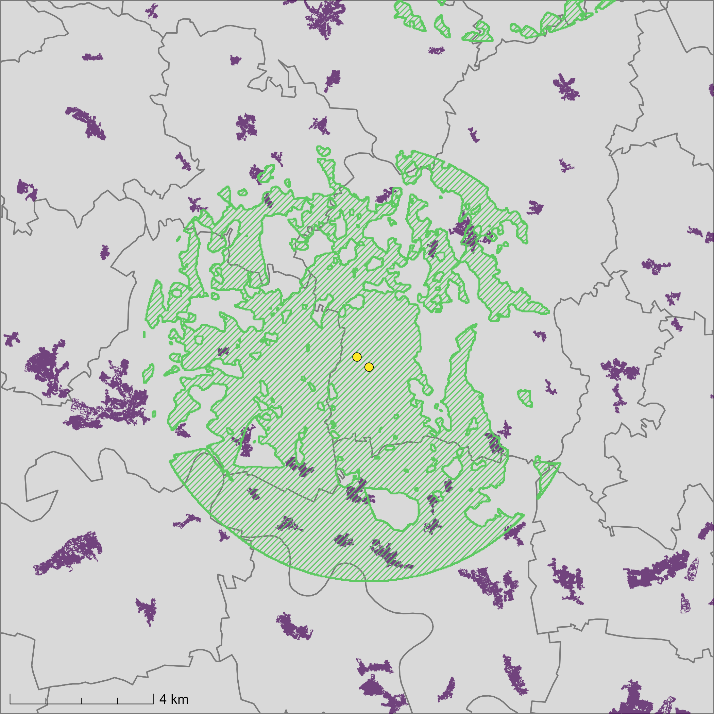

Headwind in sight? Wind turbine visibility spillovers and support for renewable energy policy
Journal of Environmental Economics and Management, 139 (2026), 103386
Abstract. Wind power expansion is a central environmental policy objective, yet it may entail aesthetic disamenities for nearby residents. Turbine visibility often transcends administrative borders, whereas political and economic processes remain more localized. We exploit this spatial asymmetry to identify the impact of cross-jurisdictional visual exposure on support for climate mitigation policies, proxied by pro-renewable voting in Germany between 1998 and 2021. We find no electoral backlash in earlier periods, but significant declines in support in more recent elections. These dynamics are consistent with shifts in debates over wind energy expansion and the growing salience of landscape concerns, with stronger effects in rural areas and in places with organized resistance, while localized economic benefits may partly offset adverse attitudes.

View full size